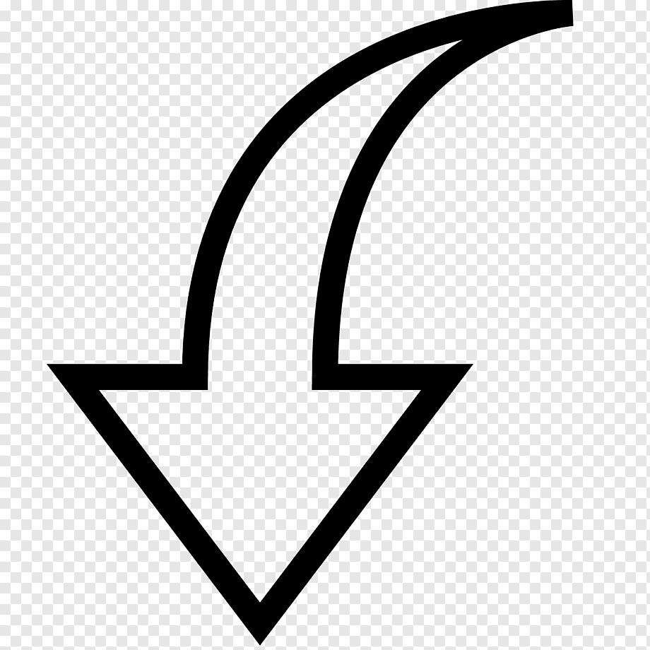

Como ter uma boa experiência
| PREPARAÇÃO | ENERGIA POSITIVA | INDICAÇÕES 1º USO | USO ORAL |
|---|---|---|---|
| Pesquisar e ter conhecimento sobre os acontecimentos do processo terapêutico, os efeitos, as informações, etc. |
Semelhante atrai semelhante, então use num lugar, tempo, pessoas com a energia que achar ideal pra atrair. |
Usar com propósito e sentido, mas sem apego ao objetivo, porque a viagem te mostrará o que você precisa, não o que quer. | Comer: igual bala fini. |
| Busca opniões profissionais e especializadas no tratamento pro asseguramento do propósito do uso. |
Esteja numa energia confortável, bem humorado e confiante para o uso. | Num espaço adquado para o corpo e não lotado. | Chá/Café: coloque numa panela tampada com água até ferver e espere 15min. |
| Tempo mínimo de jejum: 4 horas. | Sem expectativas sobre a viagem, viva o presente. Se abra pra sentir e aceitar o que é, o que foi e o que será. | A quantidade ideal pro nível desejado é referencial a reação de cada organismo, ao peso do corpo e ao jejum. | Doce: ferva numa panela com água por 5 min adcionando açucar. |
| Qualidade de sono (ter dormido no mínimo 8 horas). |
O amor é evolução, e ele não é fácil, mas é simples e cura tudo. | Caso esteja inseguro com a viagem psicodélica, comece se acostumando com uma dosagem menor e vá aos poucos subindo até o nível desejado. | Suco de limão: coloque a quantidade desejada junto com o suco e triture. |
| Espaço mínimo de tempo livre: 5 horas(+1g). |
Se encontre e não deixe que nada te tire isso, se você tiver você, conseguirá passar por tudo na vida. | Se ainda estiver inseguro, escolhe uma quantidade e fracione de 3 em 3 dias(busque indicações com suas pretensões e esse método ou outros de uso sem efeitos de trip psicodélica). | Inalação: fume só ou misturado com ervas(os efeitos são menores e menos intensos que ingerindo, e não há indicação de jejum). |